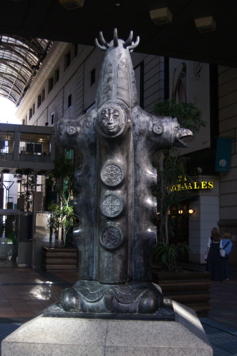
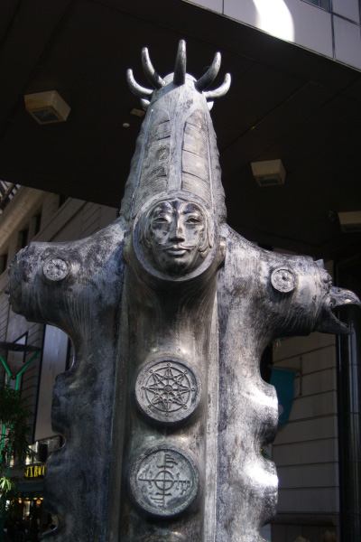
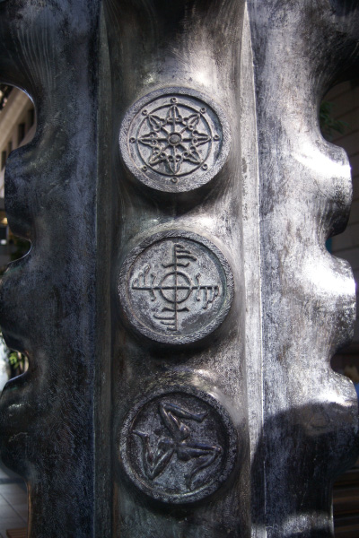
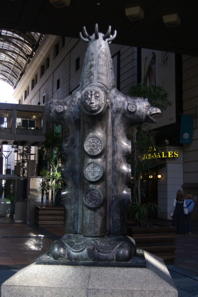
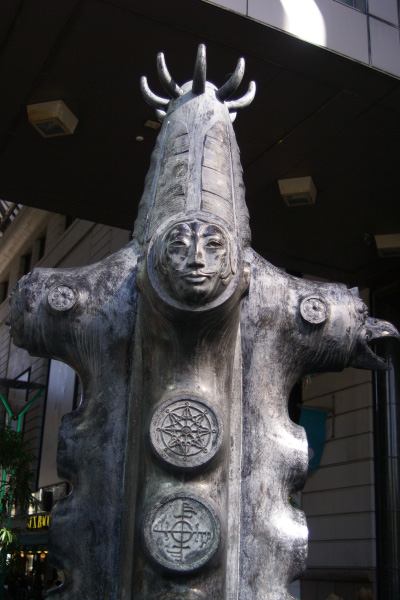
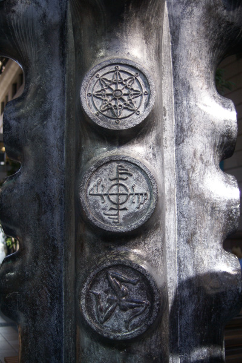
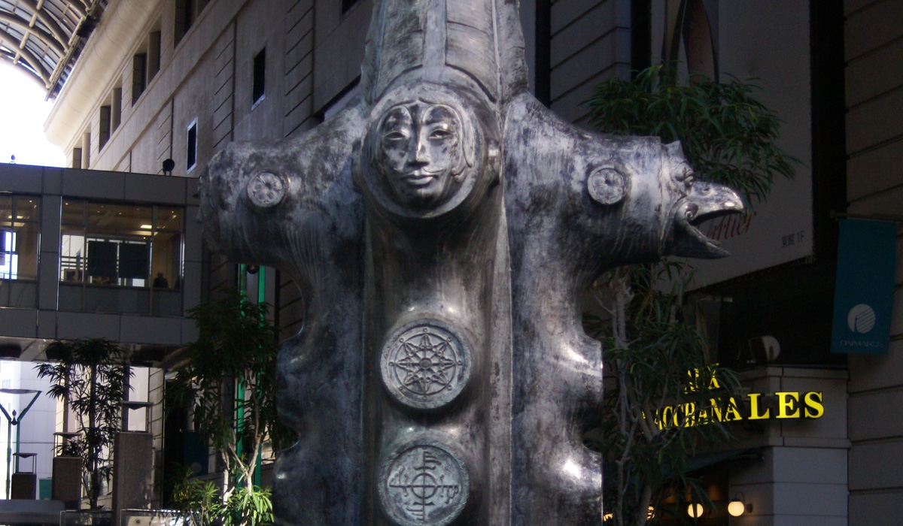
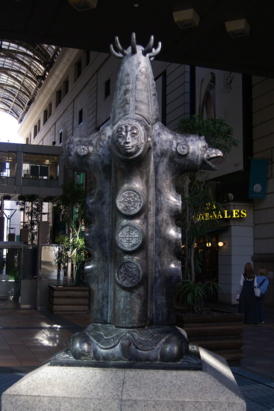
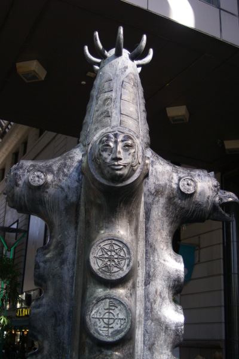
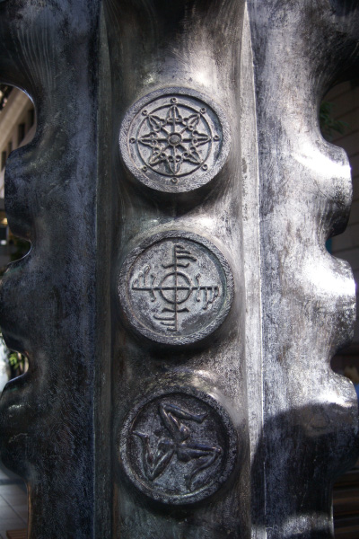

グレゴリウス・シッダルタ・スーギョ



「互いに対立し合う様々な価値観に満ちた生活の中では、人間は方向性を失うと自分自身のバランスをも乱してしまうので
はないか」。作者は『バランス・アンド・オリエンテーション』（バランスと方向性）で、「様々な差異を互いに順応させ
ながら、調和し合うものに変えることのできる成熟性」を象徴的に表現した。作品上部の4つの顔は、「北面・創造の神」
「南面・破壊と再生の魔王」「東・愛と大地の女神」「西・魂を抱いて天駆ける鳥」である。作者は1932年インドネシアに
生まれた。オランダに留学した経験があり、キュビズムを吸収した。彼は早くから絵画の中で立体的な表現を実践し、バン
ドンの抽象芸術の潮流を先導した。また一方で、インドネシア特有の民族的伝統に言及した絵画や彫刻作品も制作している。